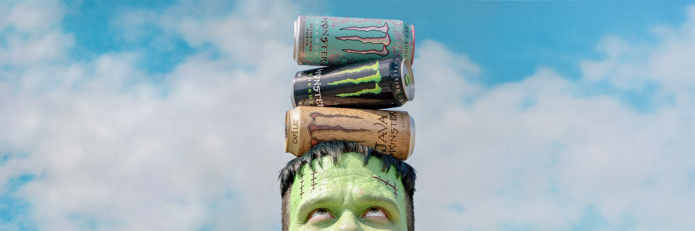
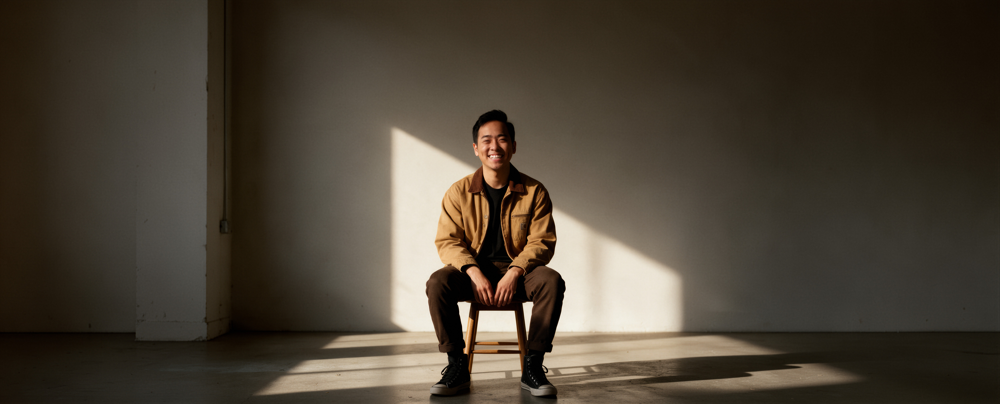
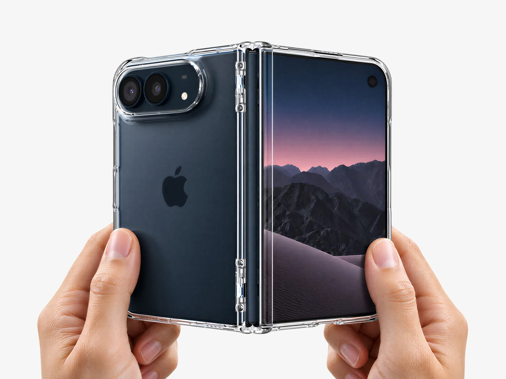
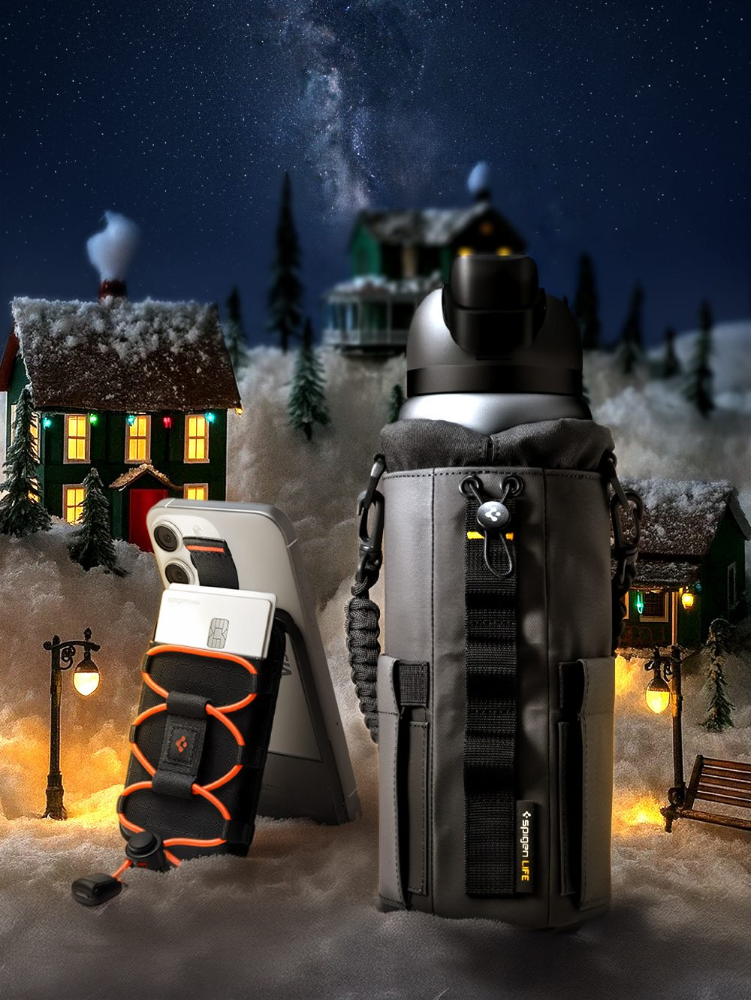

Monster After Dark
2026

©2026
I start with the problem, not the pixels, and I like figuring it out with the people who live with it. Ask questions, try things, keep what works. Good design comes out of good conversations.
On design
Every brief is a person, a problem and a product that's meant to solve it. Understand all three and the design draws itself.
2022–2026

2026
2026

2026

Skills & Expertise
By the numbers
01
Company
Spigen
Measure
+12–18% CTR
+6–10% CVR
+$0.20–0.45 RPS
Year
2025
02
Company
Spigen
Measure
Launches 23 Oct
Year
2026
03
Company
BOS Media Group
Measure
20+ sites
Year
2022
04
Company
Monster
Measure
5 monsters, 5 flavours
0 lawsuits
Year
2026
05
Company
Riot Games
Measure
1 champion, fully explained
Riot: no comment
Year
2026